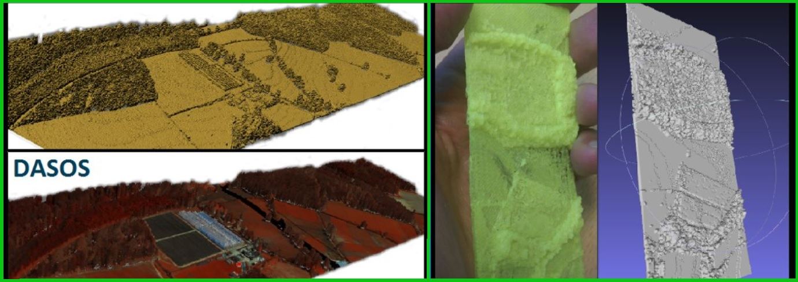

Advancement of tree structure observation algorithms for forest monitoring
FOREST (OPPORTUNITY/0916/MSCA/0005) - 150,000EUR
The “FOREST” action is an individual fellowship aiming to advance algorithms using emerging technologies related to full-waveform LiDAR. In this project, I explored analysis and data understanding of full-waveform LiDAR, as well as fusion with other Earth Observation data for forestry applications https://youtu.be/aWSYCxvKYOI. I added on my EngD and improved detection of dead standing Eucalypt trees in Australia. I implemented multi-scale 3D-windows for extracting structural elements to tackle the issue of tree height differences in native forests and improved classification results (paper available here: https://www.mdpi.com/1999-4907/11/2/161). I further improved the voxelisation approach by accounting occlusions and the time traveling of signal between the plane and the target (more data were required for evaluation, to be published). The user-guide of the open-source software DASOS was updated, support for new file formats was added and a paper describing all its functionalities was published (paper: https://www.researchgate.net/publication/334069759_Open_source_software_DASOS_efficient_accumulation_analysis_and_visualisation_of_full-waveform_lidar). It worth noting that my open-source software DASOS has been selected for inclusion in the Artic code Vault Contributor of 2020 Github Archive Program.


Related Publications
2023
- TREE SPECIES CLASSIFICATION IN A COMPLEX BRAZILIAN TROPICAL FOREST USING HYPERSPECTRAL AND LIDAR DATA
R. P. Martins-Neto, A. M. G. Tommaselli, N. N. Imai, E. Honkavaara, M. Miltiadou, E. A. S. Moriya, H. C. David Forests
- AI APPLICATIONS IN FOREST MONITORING NEED REMOTE SENSING BENCHMARK DATASETS
E. R. Lines, M. Allen, C. Cabo, K. Calders, A. Debus, S. WD Grieve, M. Miltiadou, A. Noach, H. JF Owen, S. Puliti 2022 IEEE International Conference on Big Data
2021
- A COMPARATIVE STUDY ABOUT DATA STRUCTURES USED FOR EFFICIENT MANAGEMENT OF VOXELISED FULL-WAVEFORM AIRBORNE LIDAR DATA DURING 3D POLYGONAL MODEL CREATION
M. Miltiadou, N. D. F. Campbell , D. Cosker, M. G. Grant Remote Sensing
- IDENTIFICATION OF SIGNIFICATIVE LIDAR METRICS AND COMPARISON OF MACHINE LEARNING APPROACHES FOR ESTIMATING STAND AND DIVERSITY VARIABLES IN HETEROGENEOUS BRAZILIAN ATLNATIC FOREST
R.P. Martins-Neto,A.M.G. Tommaselli, N.N. Imai, H.C. David, M. Miltiadou, and E. Honkavaara Remote Sensing
2020
- DETECTING DEAD STANDING EYCALYPT TREES FROM VOXELISED FULL-WAVEFROM LIDAR USING MULTI-SCALE 3D-WINDOWS FOR TACKLING HEIGHT AND SIZE VARIATIONS
M. Miltiadou, A. Agapiou, S. Gonzalez Aracil, D. G. Hadjimitsis Forests
2019
- OPEN SOURCE SOFTWARE DASOS: EFFICIENT ACCUMULATION, ANALYSIS, AND VISUALISATION OF FULL-WAVEFORM LIDAR
M. Miltiadou, M. G. Grant, N.D.F. Campbell, M. Warren, D. Clewley, D. G. Hadjimitsis SPIE Library, Seventh International Conference on Remote Sensing and Geoinformation of the Environment (RSCy2019)
2018
- DETECTION OF DEAD STANDING EUCALYPTUS CAMALDULENSIS WITHOUT TREE DELINEATION FOR MANAGING BIODIVERSITY IN NATIVE AUSTRALIAN FOREST
M. Miltiadou, M. G. Grant, N.D.F. Campbell, M. Warren, D. Clewley, D. G. Hadjimitsis International Journal of Applied Earth Observation and Geoinformation
2017
2016
- IMPROVING AND OPTIMISING VISUALISATIONS OF FULL-WAVEFORM LIDAR DATA
M. Miltiadou, NDF Campbell, M Brown, D Cosker, Micheal Grant,Proceedings of the conferece on Computer Graphics & Visual Computing
2015
- ALIGNMENT OF HYPERSPECTRAL IMAGERY AND FULL-WAVEFORM LIDAR DATA FOR VISUALISATION AND CLASSIFICATION PURPOSES
M. Miltiadou, M.A. Warren, M. Grant, M. Brown, The International Archives of Photogrammetry, Remote Sensing and Spatial Information Sciences
